Simulador SMPL : Algoritmo VRing
Maria Clara de C. Salik GRR20196286
Tarefa 0 :
Digitar, compilar e executar o programa exemplo, tempo.c
- Foi compilado o programa usando o makefile e executado o programa com ./tempo 3
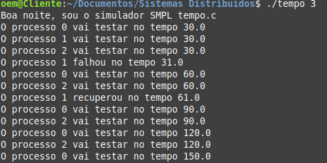Tarefa 1 :
Fazer cada um dos processos testar o seguinte no anel. Implemente o teste com a função status() do SMPL e imprimir (printf) o resultado de cada teste executado. Por exemplo: “O processo i testou o processo j correto no tempo tal.”
- Foi acrescentado no case test um printf mostrando o teste correto do processo i no j (incrementando o token):
case test:
if (status(processo[token].id) != 0) // processo falho não testa
break;
printf("O processo %d vai testar no tempo %4.1f\n", token, time());
schedule(test, 30.0, token); // um novo teste daqui a esse tempo
printf("O processo %d testou o processo %d correto no tempo %4.1f\n", token, (token+1)%N, time());
break;
Log de saída :
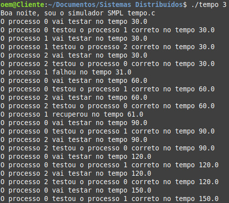Tarefa 2 :
Cada processo correto executa testes até achar outro processo correto. Lembre-se de tratar o caso em que todos os demais processos estão falhos. Imprimir os testes e resultados.
- Foram feitas as seguintes alterações mostradas com comentários no case test :
case test:
if (status(processo[token].id) != 0) // processo falho não testa
break;
printf("O processo %d vai testar no tempo %4.1f\n", token, time());
int t =(token+1)%N; // o próximo considerando que é um teste circular
while (status(processo[t].id) != 0 && t != token){ // enquanto não acha um correto e testou todos
printf("O processo %d testou o processo %d falho no tempo %4.1f\n", token, t, time());
t =(t+1)%N; // o próximo considerando que é um teste circular
}
printf("O processo %d testou o processo %d correto no tempo %4.1f\n", token, t, time());
schedule(test, 30.0, token);
break;
Log da saída :
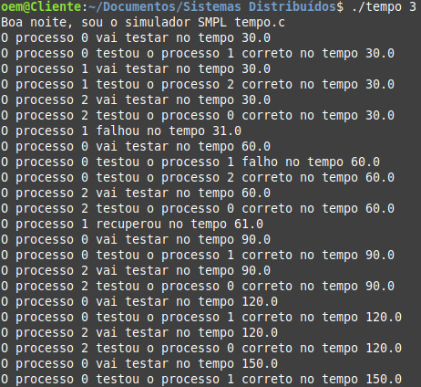- Acrescentando uma falha e recuperação do processo 2 além do 1 para teste :
schedule(fault, 31.0, 2); // vai falhar nesse tempo
schedule(recovery, 61.0, 2); // vai recuperar nesse tempo
Log de saída :
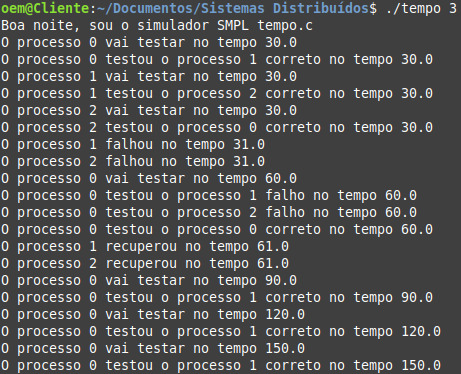Tarefa 3 :
Cada processo mantém localmente o vetor State[N]. A entrada do vetor State[j] indica o estado do processo j. O estado de cada processo pode ser: -1 (unknown), 0 (correto) ou 1 (falho). Inicialize (para todos os processos) o State[N] com -1 (indicando estado “unknown”) para todos os demais processos e 0 para o próprio processo. Nesta tarefa ao executar um teste em um processo j, o testador atualiza a entrada correspondente no vetor State[j]. Em cada intervalo de testes, mostre o vetor State[N].
- Foram feitas as seguintes alterações no case test tratando os estados (-1,0,1) e os possíveis eventos que podem ocorrer:
case test:
if (status(processo[token].id) != 0) // processo falho não testa
break;
printf("O processo %d vai testar no tempo %4.1f\n", token, time());
int t = (token+1)%N; // já que é um teste circular faço mod N
while (status(processo[t].id) != 0 && t != token){ // enquanto não acha um correto e não testou todos
printf("O processo %d testou o processo %d falho no tempo %4.1f\n", token, t, time());
// tratando eventos
if (processo[token].State[t] == -1) // se em estado unknown
processo[token].State[t] = 1; // atualiza para estado falho
else if (processo[token].State[t]%2 == 0) // se par (Era correto e agora é falho -> evento)
processo[token].State[t]++; // incrementa
t = (t+1)%N; // vai para o proximo processo considerando que é um teste circular
}
// tratando eventos
if (processo[token].State[t] == -1) // se em estado unknown
processo[token].State[t] = 0; // atualiza para estado correto
else if (processo[token].State[t]%2 == 1) // se ímpar (Era falho e agora é correto -> evento)
processo[token].State[t]++; // incrementa
printf("O processo %d testou o processo %d correto no tempo %4.1f\n", token, t, time());
printf("Vetor State resultante do processo %d: ", token); // mostra o vetor State
for(int j=0; j < N; j++){
printf("%d", processo[token].State[j]);
}
printf("\n");
schedule(test, 30.0, token); // um novo teste daqui a esse tempo
break;
Log da saída :
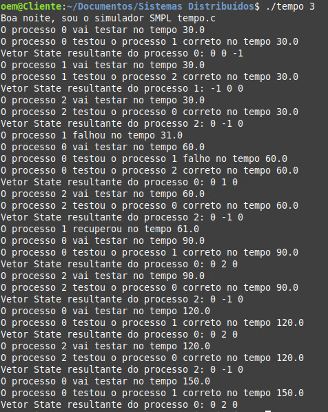-> Acrescentando uma falha e recuperação do processo 2 além do 1 para teste :
schedule(fault, 31.0, 2); // vai falhar nesse tempo
schedule(recovery, 61.0, 2); // vai recuperar nesse tempo
Log da saída :
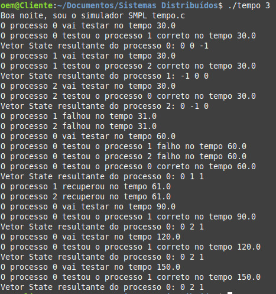Tarefa 4
Quando um processo correto testa outro processo correto obtém as informações de diagnóstico do processo testado sobre todos os processos do sistema exceto aqueles que testou nesta rodada, além do próprio testador.
- Através de um laço for acrescentado fora do laço de repetição while, para os testes corretos, é possivel salvar as informações fazendo uma cópia do vetor state :
for (int j=(t+1)%N; j != token; j=(j+1)%N){ // copia o vetor state atualizando as informações do
processo que esta testando sobre os demais que não foram testados na rodada
processo[token].State[j] = processo[t].State[j];
}
Log da saída :
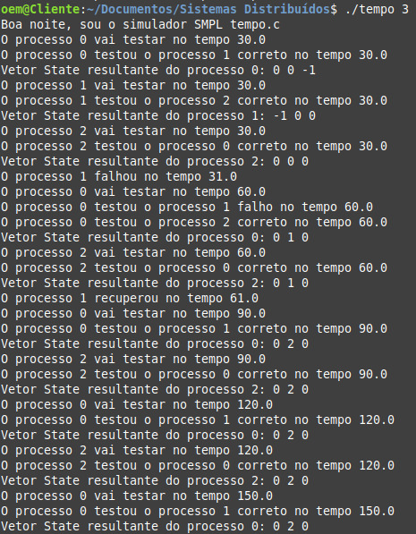-> Acrescentando uma falha e recuperação do processo 2 além do 1 para teste :
schedule(fault, 31.0, 2); // vai falhar nesse tempo
schedule(recovery, 61.0, 2); // vai recuperar nesse tempo
Log da saída :
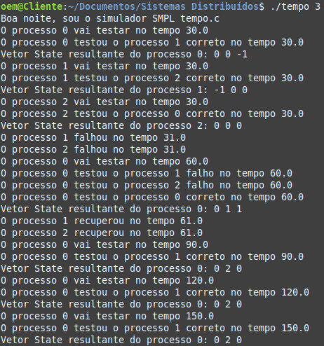Simulador SMPL : Algoritmo VCube (T1)
Arquivos
-> O funcionamento do VCube é da seguinte forma : Os processos são organizados em logN clusters com tamanho igual a uma potência de 2. Uma função C(i,s) retorna a lista de processos que devem ser testados pelo testador i nos clusters s. Em um intervalo de testes um processo correto testa um cluster até encontrar um processo correto ou testar todos os falhos. Já a rodada de testes acontece quando todos os processos corretos tentaram pelo menos um de seus clusters.
Quando todos os processos são corretos, o VCube é um hipercubo !
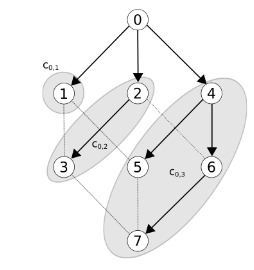Um exemplo do funcionamnto da função cis C(i,s) :
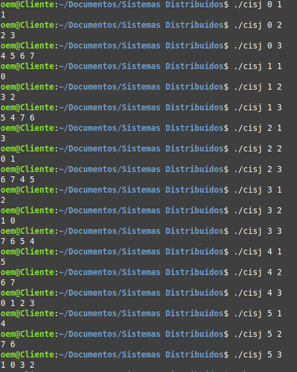-> Latência e número de testes
O algoritmo VCube tem como latência no pior caso log²N, mas passa a ser logN testando todos os clusters em um mesmo instante de tempo.
São executados no máximo NlogN testes levando em consideração o total de logN clusters e que há pelo menos um processo correto em cada cluster.
No case test do switch (event) foi criado primeiramente um laço para que todos os clusters fossem testados e também um segundo for para percorrer os nodos seguintes. Condições foram implementadas para testar se o status do processo está correto ou falho, dependendo disso ações são tomadas.
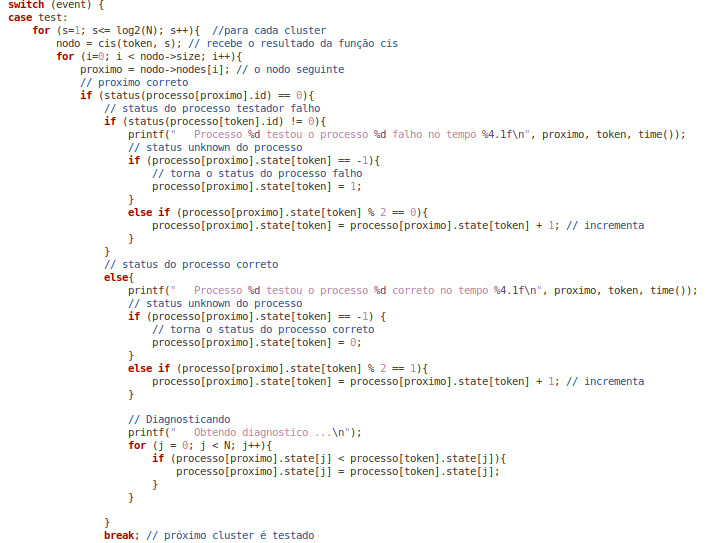
Para os testes desse trabalho foi considerado o seguinte agendamento de testes como exemplo :
Obs : Para cada processo i um teste é realizado.
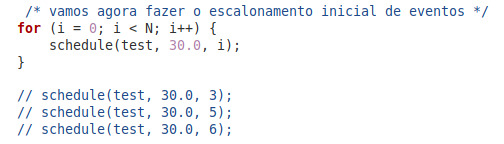

O algoritmo foi implementado para fazer testes enquanto o tempo for menor que 90s ( while (time() < 90.0) ) e foram feitos testes para valores de N igual a 8, 14 e 16.
A cada intervalo de testes, o estado de cada processo é impresso e ao final temos então a rodada completa, como mostram os logs a seguir :
-> N = 8
-> N = 14
-> N = 16
Simulador SMPL : Algoritmo VCube Assíncrono (T2)
Arquivos
- vcube_assincrono.c
- rand.c
- smpl.c
- cisj.c
- visualização do log
- visualização do log
- visualização do log
- visualização do log
- visualização do log
- visualização do log
- visualização do log
- visualização do log
- visualização do log
- visualização do log
O vCube agora foi modificado para o modelo assíncrono, onde a cada teste de processo correto, o testador determina com base em uma probabilidade definida que o teste será uma falsa suspeita. Então, quando o processo obtém a informação de que foi vítima de uma falsa suspeita, o processo encerra a execução e sai do sistema
No else que representa o status do processo testador correto a análise de suspeita de falho foi acrescentada, com uma probabilidade calculada para se obter uma falsa suspeita ou não. Se não for falsa suspeita de falho (comparado com o valor de X passado na execução), ele de fato está falho, então o processo sai definitivamente do sistema e o vetor state é atualizado. Foi também incrementado o contador que representa o número de rodadas entre uma falsa suspeita e a saída do processo do sistema.
A imagem abaixo mostra a mudança implementada no código :
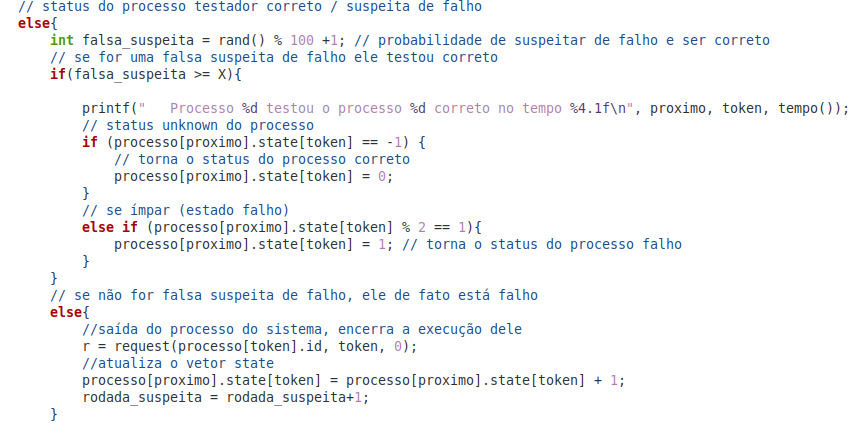
O algoritmo foi implementado para fazer testes enquanto o tempo for menor que 90s ( while (time() < 90.0) ) e foram feitos testes para valores de N igual a 8, 14 e 16 com probabilidade de suspeitar de falho gerada aleatoriamente pelo função rand() % 100 +1 e o valor para testar se é uma falsa suspeita de falho (correto) igual a 10%, 30%, 50% e 70%.
A cada intervalo de testes, o estado de cada processo é impresso e ao final temos então o número de rodadas completa e também o número de rodadas entre uma falsa suspeita e a saída do processo do sistema como mostram os logs a seguir :
OBS : Para poder usar a função rand() foi chamada a função srand(time(NULL)) sendo necessrário mudar no arquivo smpl.h o nome da função time() do dimulador para não ter conflito com a função time() da biblioteca C.
N = 8
- Valor falsa suspeita de falho 10%
- Valor falsa suspeita de falho 30%
- Valor falsa suspeita de falho 50%
- Valor falsa suspeita de falho 70%
N = 14
- Valor falsa suspeita de falho 10%
- Valor falsa suspeita de falho 30%
- Valor falsa suspeita de falho 50%
N = 16
- Valor falsa suspeita de falho 10%
- Valor falsa suspeita de falho 30%
- Valor falsa suspeita de falho 50%